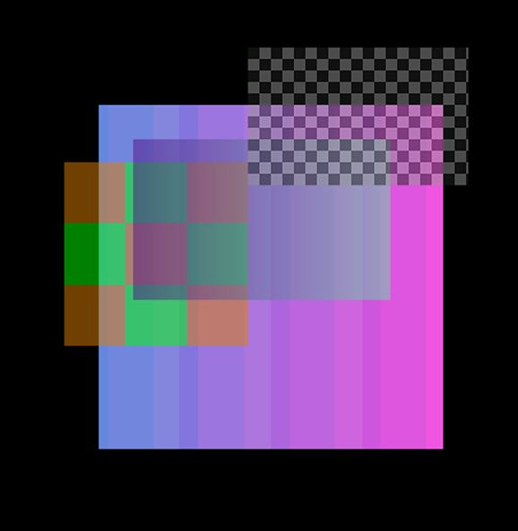
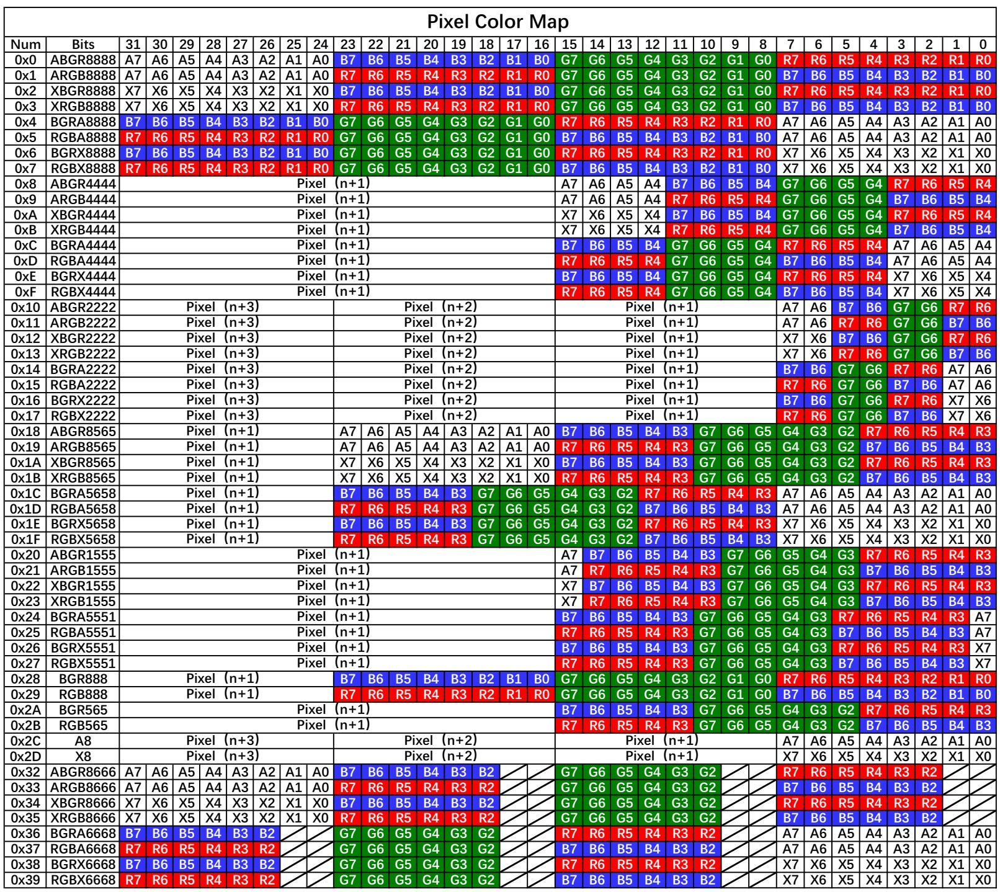

PPE
Sample List
This chapter introduces the details of the PPE sample code. The RTL87x2G series provides the following samples for the PPE peripheral.
Functional Overview
PPE (Pixel Process Engine) is designed for image manipulation, which mainly consists of two functions, scale and blend. Scale function can be used to zoom in or zoom out the source image and transmit result image to specified memory for further use. While blend function can be used to blend multiple source images together with different position and store result into target memory.
Source images are read into PPE through input layers while result image is outputted through result layer. Various pixel color formats are supported for all input layers and result layer.
Feature List
Support scale up/down function.
Support blend function for at most 4 layers.
Support multiple color formats.
Configurable input and output memory address.
Support pixel source from memory and constant value from register.
Support color key filter.
Support alpha mask.
Scale
PPE supports scale function for input source image, allowing the image to be zoomed in or out according to specified proportions. Significantly, the proportions for scaling can be configured separately for the X-axis and Y-axis, which allows the adjustment of the width and height.
Scale function can be easily implemented by calling API PPE_Scale(). Sample scale result is shown in the figure below:

PPE Scale Sample
Blend
The PPE supports a blend function that allows the combination of up to four source images. PPE will blend them together and transfer result image through result layer into target memory address. Each source image can also be translated along X or Y axis in a positive direction.
Blend function of PPE follows the algorithm of following formula:
Blend function can be easily implemented by calling API PPE_Blend(). Sample blend result is shown in the figure below:

PPE Blend Sample
Color Key
The key color is assigned for input layer register and matches color format of source image. Source pixels obtained from RD FIFO are compared to the key color. If source pixel value, excluding transparency channel (Alpha), matches the key color, it will be replaced with 0. Otherwise it retains its original value. It is important to note that transparency channel is not considered in color key comparison, but it will still be replaced if the pixel matches the key color.
Color key should be set in the input description: ppe_buffer_t::color_key_en and ppe_buffer_t::color_key_value.
Pixel Format
PPE supports multiple color formats for input and output layer. The following table shows the supported color formats:

Supported Color Format
Alpha Mask
The PPE supports the use of an alpha mask when the source image serves as the pixel source. It can decrease transparency of input pixels before further processing.
The transparency of the pixel source is then modified using the alpha mask according to the following conversion formula:
Troubleshooting
Error Handling
PPE operates directly on the memory address specified by user. User should ensure that the memory address is valid and not occupied by other applications, or memory corruption may occur.
Other errors can be found in PPE_ERR.
See Also
Please refer to the relevant API Reference: